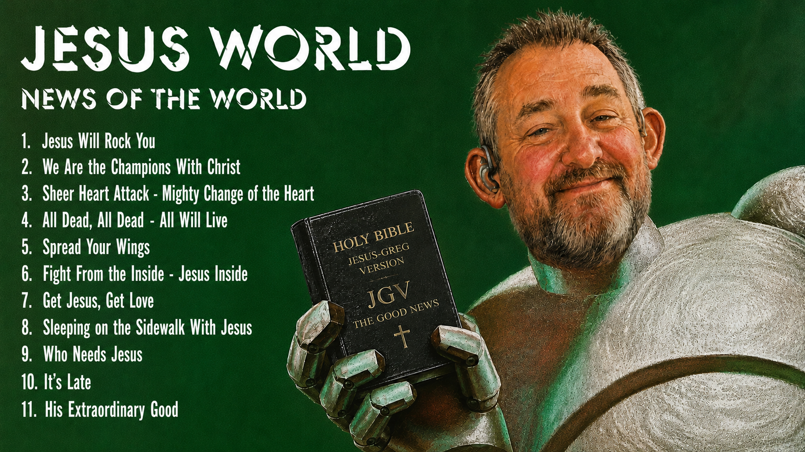

News Of The World - Jesus WORLD
HIS MORNING'S NEWS FROM JESUS
Jesus is continuing to give me NEWS (revelation) regarding what Zion Coalition (Zioncoalition.org) is.
Among other things, it is a news making, news gathering and news distributing project (like eventual Zion will be).
Jesus seems to have made human beings with a deep desire not merely to consume reality, but to participate in its unfolding. We hunger for the next thing. The newest discovery. The latest revelation. The breaking story. The next episode. The next scientific breakthrough. The next word from God.
Alma's cry—"Oh that I were an angel"—sounds remarkably like this impulse. He wanted to become a distributor of news. Not ordinary news, but the greatest news possible. He wanted to fly throughout the earth declaring what God was doing.
He wanted a larger microphone.
Science functions similarly. Scientists search for discoveries and then publish them. Journalists gather events and distribute them. Hollywood packages stories and broadcasts them. Religious traditions preserve and proclaim revelation. Social media allows millions of individuals to become tiny news agencies. AI may soon allow everyone to create their own television station.
The instinct behind all of these may be the same: people want to know what is happening, and they want to help shape what happens next.
That is where the quote about being the change becomes interesting.
Most people consume news. Some people create news.
The scientist creates news by discovering something. The artist creates news by imagining something. The prophet creates news by revealing something. The entrepreneur creates news by building something. The saint creates news by becoming something.
Perhaps "Be the change you want to see in the world" is really an invitation to stop waiting for better headlines and become one.
Alma's desire was not merely to hear God's message but to become one of God's messengers. Not merely to witness the story but to participate in writing it.
Viewed this way, history itself could be seen as a giant news-generation system. God continually invites ordinary people to move from audience members to co-laborers. From spectators to participants. From consumers of the news to producers of the Good News.
And perhaps this is why people grow bored with "same old, same old." Deep down, we suspect we were made for more than watching the story unfold. We were made to help write the next chapter.
In fact hell may be the lack of real news--- making people miserable (weep and wail and gnash their teeth, "Oh, it is always the same damn slop!")
The human hunger for fresh news may ultimately be a hunger for revelation.
Not necessarily spectacular revelation. Not necessarily canonized scripture. But something new from God. Something alive. Something current. Something that helps us see what Jesus is doing right now.
This is where the phrase, "The testimony of Jesus is the spirit of prophecy," from Book of Revelation 19:10 becomes interesting.
A testimony of Jesus is not merely information about Jesus. It is often a report of Jesus in action. It is news.
"Look what Jesus did."
"Look what Jesus taught me."
"Look what Jesus revealed."
"Look what Jesus is building."
When someone bears testimony, they are functioning in a small prophetic role. They are reporting heavenly news from the front lines of their life.
Science gathers evidence and distributes discoveries.
Journalism gathers events and distributes reports.
Hollywood gathers stories and distributes narratives.
Religion, at its best, gathers testimonies of Jesus and distributes them.
That may be one reason testimonies are so powerful. They satisfy the same instinct that makes people check the news every morning. We want to know:
What is happening?
More specifically:
What is Jesus doing?
Seen through that lens, revelation is not merely guidance. It is a form of divine journalism. Heaven's ongoing news service.
Alma's cry, "Oh that I were an angel," can almost be heard as:
Oh that I could be one of Heaven's reporters.
He wanted to go throughout the earth broadcasting the greatest news story ever told.
And perhaps every disciple receives a small version of that assignment.
Not everyone becomes an angel.
Not everyone becomes a prophet.
But everyone can become a witness.
Everyone can become a correspondent from their little corner of Zion.
Everyone can gather evidence of Jesus, collect stories of Jesus, notice the fingerprints of Jesus, and then distribute that news to others.
Which suggests another way to read my favorite phrase, "MORE Jesus".
It is not merely a slogan.
It is a news preference.
Of all the stories competing for attention, of all the headlines, controversies, entertainments, and distractions, the disciple gradually develops a preference for a particular kind of news:
"Tell me more about what Jesus is doing."
And the remarkable promise of revelation is that Jesus often answers that request by making the seeker part of the story He is revealing.
Zion Coalition is where Jesus makes news, records news and shares news, with me.